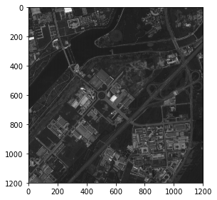
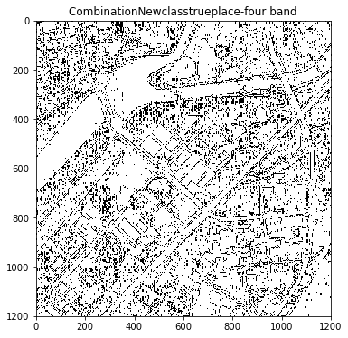

In [1]:
import sklearn
from PIL import Image
import skimage.io as SKimg
import numpy as np
import matplotlib.pyplot as plt
import scipy.io as sio
import time
import pandas as pd
import MatrixNeighborhood as MNB
import ALLNeighborhoodrelationship as ANBHR
In [2]:
Tpan =SKimg.imread("F:/pythontestdata/MyTiff/tianhui1200pan.tif")
SKimg.imshow(Tpan)
SKimg.show()
Tpan.shape

Out[2]:
(1200, 1200)
In [3]:
#matlab文件名
matfn='gt_tianhui1200.mat';
data=sio.loadmat(matfn);
mk = data['gt']
print(mk)
moban=(mk*0)+1;
plt.figure(figsize=(6,6))
im = Image.fromarray(mk);
plt.imshow(im,cmap=plt.cm.get_cmap('cubehelix_r',7));
cbar=plt.colorbar()
cbar.set_ticks(np.linspace(0,7,8))
cbar.set_ticklabels((' ','water','grass','bulding','road','luodi','background'))
plt.clim(-0.5,6.5)
plt.title('GroundTruth');
plt.show();
[[6 6 4 ..., 6 6 6]
[6 6 6 ..., 6 6 6]
[6 6 6 ..., 6 6 6]
...,
[3 3 3 ..., 2 2 2]
[6 3 3 ..., 2 2 2]
[6 3 3 ..., 2 2 2]]

In [4]:
NEWclassLabel=MNB.NewClassLabel(mk);
NewTpan=ANBHR.MUltibandFourTwoNeibor();
ALLzuheLABEL=np.unique(NEWclassLabel,return_index=True,return_inverse=True,return_counts = True)[0];
In [5]:
ALLUvalue=np.unique(NewTpan,return_index=True,return_inverse=True,return_counts = True)[0];
ALLUinverse=np.unique(NewTpan,return_index=True,return_inverse=True,return_counts = True)[2];
LenthofALLunique=len(ALLUvalue);
ALLfinalF=[];
for i in range(0,len(ALLzuheLABEL)):
TF=(NEWclassLabel==ALLzuheLABEL[i]);
TempMask=TF*NewTpan;
usefulValue=TempMask[TF];
Uvalue=np.unique(usefulValue,return_index=True,return_inverse=True,return_counts = True)[0];
Uinverse=np.unique(usefulValue,return_index=True,return_inverse=True,return_counts = True)[2];
Ufrence=(np.unique(usefulValue,return_index=True,return_inverse=True,return_counts = True)[3])/len(usefulValue);
fram1=pd.DataFrame({'id':ALLUvalue});
fram2=pd.DataFrame({'id':Uvalue,'F':Ufrence});
MEge=pd.merge(fram1,fram2,on='id',how='outer');
MegeFILL=MEge.fillna({'F':0.0});
finalF=np.array(MegeFILL['F']);
ALLfinalF.append(finalF);
In [6]:
LastLabel=np.zeros(LenthofALLunique);
for j in range(0,LenthofALLunique):
MAXP=0; maxindex=0; tempF=[];
for h in range(0,len(ALLfinalF)):
tempF.append(ALLfinalF[h][j]);
for k in range(0,len(tempF)):
if(tempF[k]>MAXP):
MAXP=tempF[k]
maxindex=ALLzuheLABEL[k];
LastLabel[j]=maxindex;
NewLastLabe=LastLabel[ALLUinverse];
import math
finaLabel=mk-2;
for HL in range(0,len(NewLastLabe)):
h=math.floor(HL/1200); l=HL%1200;
finaLabel[h][l]=math.floor(NewLastLabe[HL]/10);
In [7]:
# 成图展示
mylabel=finaLabel;
print(mylabel)
plt.figure(figsize=(6,6))
im2 = Image.fromarray(mylabel);
plt.imshow(im2,cmap=plt.cm.get_cmap('cubehelix_r',7));
cbar=plt.colorbar()
cbar.set_ticks(np.linspace(0,7,8))
cbar.set_ticklabels((' ','water','grass','bulding','road','luodi','background'))
plt.clim(-0.5,6.5)
plt.title('CombinationNewclassTruth-four band');
plt.show();
[[6 6 6 ..., 6 6 6]
[6 6 6 ..., 6 6 6]
[6 6 6 ..., 6 6 6]
...,
[6 3 3 ..., 2 2 2]
[6 3 3 ..., 2 2 2]
[6 3 3 ..., 2 2 2]]

In [8]:
TrueOrFalse=(mylabel==mk)
TrueValue=TrueOrFalse[TrueOrFalse>0]
FalseValue=TrueOrFalse[TrueOrFalse==0]
correct=len(TrueValue)/(len(TrueValue)+len(FalseValue));
print(len(TrueValue)); print(len(FalseValue)); print(correct);
1189807
250193
0.8262548611111111
In [9]:
TRUEplace=(mylabel==mk)*10000;
FalsePlace=(mylabel!=mk)*10000;
plt.figure(figsize=(6,6))
imT = Image.fromarray(TRUEplace);
plt.imshow(imT,cmap='Oranges');
plt.title('CombinationNewclasstrueplace-four band');
plt.show();
plt.figure(figsize=(6,6))
imF = Image.fromarray(FalsePlace);
plt.imshow(imF,cmap='Reds');
plt.title('falseplace');
plt.show();


In [ ]: